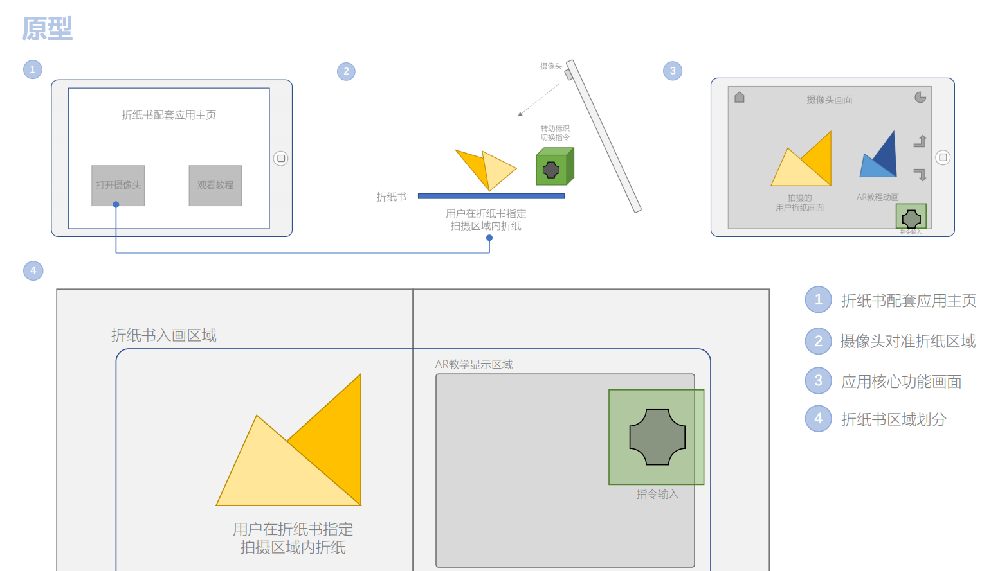

The VR interactive clothing design application is developed by Unity 3D to provide clothing designers with a more 3D space that enhances creativity.
Under the trend of Industry 4.0 and smart manufacturing, the upstream and downstream links of the production chain are closer than ever, with information and data flowing rapidly.
In the digital transformation of the apparel industry, the usage of digital prototypes in the product development stage can significantly reduce the time and manufacturing costs required for apparel design. In addition, the digitalization of the apparel industry supply chain will pay more attention to consumer demand. Since the development of virtual reality technology, with its immersive and interactive advantages, it has gradually been applied to architecture, medical treatment, military, and so on. For the clothing industry, virtual reality technology can be applied to clothing design as well. Through iterative digital prototypes in virtual reality, the time and raw material costs required for clothing product development can be significantly reduced, which has important potential for improving the efficiency of the industry.
| Date: | Mar ~ May.2021 |
| Developed by: | Aris |
| My role: | UX Design, Animation, Graphic design |
| Platforms: | Windows 10 |
| Tools: | Unity, Google Tilt Brush |
| Share: |
Based on the above challenges, this design aims to provide an interactive clothing design environment in virtual reality for clothing designers. Efficient designing and editing clothing models by interacting with three-dimensional clothing models will help companies to reach the next horizon of operational effectiveness.
With the help of a video tutorial, users can watch the actual operation and refer to voice guidance at the same time. However, users need to frequently click the pause and play buttons on the playback device and pull back the progress bar, which is very inconvenient.
1. Fashion Designer
2. Customers
3. Students who study fashion design
According to our previous research, many users who are interested in origami still cannot do origami activities without the help of the tutorial. But many existing tutorials have problems such as inconsistent steps. Therefore, we decided to use AR technology to implement a playable origami tutorial, which is as simple, intuitive and easy to understand as possible.
Many users also mentioned the problem of notes in existing origami tutorials, which were either unclear or too complex. We will also add some auxiliary functions in our origami tutorial, including text interpretation and annotation, etc., in the hope of helping users to understand better.
In our research, when the topic of "the reasons that hinder learning origami" was mentioned, almost all respondents mentioned the problem that the "steps" in the tutorial were not reasonable enough. Sometimes key steps are skipped, which can be very frustrating. Another problem with existing video tutorials is that the progress bar is often not pulled correctly. Moreover, the subjective consciousness of the video maker sometimes affects the teaching.
In our AR tutorial, we will allow users to do "progress backtracking", that is, to choose a certain step freely and watch the instructional animation repeatedly. In this way, on the one hand, continuous 3D animation will fully show the whole process of origami, avoiding the trouble caused by the "skip step" problem. On the other hand, users can choose their own difficulties to learn repeatedly according to their personal situation.
In our design, users can switch back and forth between necessary steps by directly clicking buttons on the screen. They can also play animation over and over of the current step.
In a complete origami process, each step is different in difficulty and time. For some simple steps, the user only needs to understand, then reproduce easily. For some more complex steps, users tend to spend more time to learn, imitate, or even repeatedly watch.
We want to give the user the power to adjust the speed of the animation, so that the user can adjust the speed according to their own situation. For some simple steps in the early stage, users can speed up the video; For critical steps, users can slow down it to get a closer look at more complex operations.
In our early research, we found that many users suggested that there should be a detailed description of each step in the origami tutorial. So in our interface, we not only use 3D animation to show the specific content of each step more intuitively, but also add a transparent text explanation on the basis of it, which is convenient for users to better understand the specific content of each step. At the same time, it can remind the user what difficult point is easy to make mistakes, which can impress him/her.
In ordinary origami tutorials with pictures and texts, auxiliary lines are usually marked to make it easier for readers to understand. However, in our survey, many respondents said that sometimes the lines are so numerous and complex that they can be confusing, which only makes the process of understanding the tutorial more difficult.
Therefore, in our interface, we will design more reasonable labeling functions of auxiliary lines. We hope that these designs will make the process of origami easier for users to understand.
We decide to develop an AR - based origami tutorial book user interface, which can make it easier for users to learn more difficult origami tutorials slightly.
It can "project" virtual tutorial images into the display area of the book, and users can observe the page from all directions simply by pointing the camera of the phone/tablet at the page. Users can easily switch between each origami step by touching the buttons on the screen.
Through our interface, the origami process is divided into discrete pieces. Users only need to focus on the same point of view to watch the playable tutorial; It costs very little to switch between "previous step" and "next step" while following the tutorial, without having to memorize the indicator line. In this way, the tutorial becomes easier to understand.
Professionals engaged in related education, such as preschool or art teachers.
We used Unity and AR kit / AR core to develop the project. We hope that users can use the product in mobile phones, tablets and computers, and the interface can run efficiently without getting stuck.
BTN: BTN is an abbreviation for user interface buttons.
Record : Record refers to the user's history of using the product.
Random: Random is a random origami tutorial for users.
Affected by the epidemic situation, we cannot go back to school and obtain AR-related development equipment in the development process. We can only use the AR handheld device - smart phone. And in the test phase, due to environmental constraints, we cannot test all the preset scenarios, such as the effect of using the product in the classroom environment.
The following is a paper prototype of our AR-based origami app and book. The main interface includes Start Scene, Menu, Index and Tutorial Scenes. The relations between each scene is shown in the sketch.

The President decided to teach Suzanne Paper Planes origami to a group of origami novices.
In this scenario, the group of origami beginners were able to learn quickly by themselves, because the app provided AR animations which were easy to understand, and the students could stay focused on their hands, rather than dragging video progress bars.

A 7-year-old girl was learning origami on iPad. Her mother wanted to cultivate the girls’ creativity and practical skills.
In this scenario, the little girl read the book and used the AR app on an iPad with her mother and changed steps through voice interaction. With the colorful 3D animation, inspiring messages and voice interaction, the girl could be concentrated on origami and learn happily.